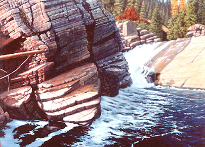

|
The steam schooner -- a wooden-hulled steamer designed for the coastal lumber trade -- is
unique to the West Coast. The Wapama is the last of 235 steam schooners built on that Coast.
She was built in 1915 for the run between Oregon and California. The long shallow hulls of the steam schooners
made for a weak structure, prone to sag at the bow and stern. As age and decay sapped the strength of the
Wapama’s massive timbers this “hogging” process became so bad that she could not remain
afloat. Placed on a barge in 1980 the Wapama remains a unique and impressive piece of naval
architecture. Given suitable systems for rot control, physical support and weather protection,
it will be possible to preserve the ship indefinitely out of the water. This painting was done while the Wapama was in the historic Oakland estuary, Oakland, California. In the distance behind the ship are the buildings of the U. S. Coast Guard base at Alameda. Currently, the Wapama is located in Richmond California. |


Run for Red Rock Station ~ (1981) ~ (SOLD)
Click Here for the Big Picture
The Old Drooping Window ~ (1983) ~ (SOLD)
Oil on Masonite panel.
Click Here for the Big Picture

Yaak River, Montana (detail) ~ (1991) ~ (SOLD)
Shadows on the Land ~ (SOLD)
Oil on Masonite panel, 38" x 30" ~ (2011)
Click Here for the Big Picture
I've Known Rivers
Oil on Canvas, 48" x 24" ~ (2011)
Click Here for the Big Picture


E~mail Me!
Click Here